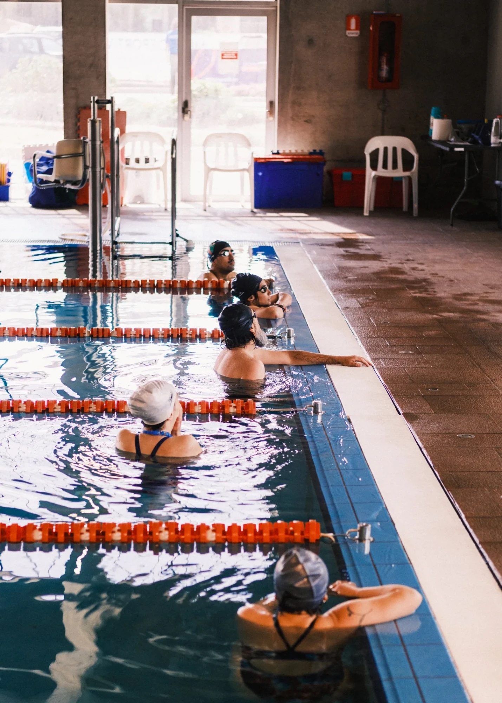
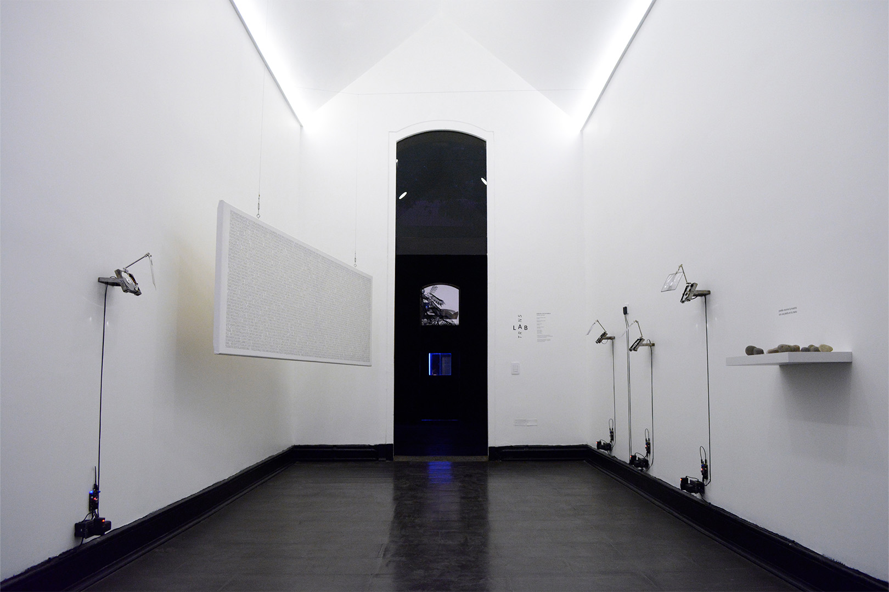
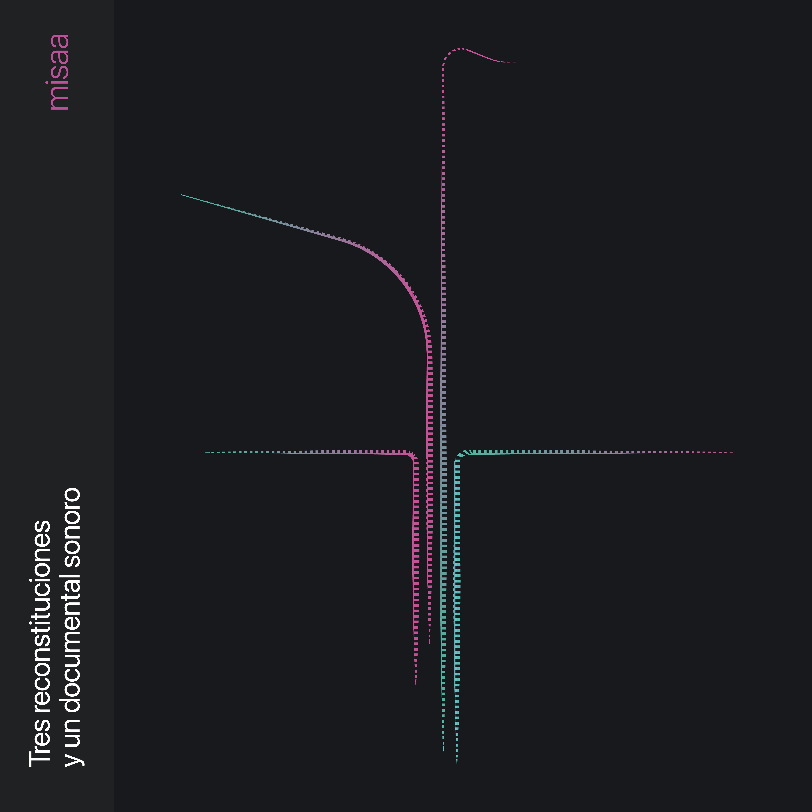

Matías Serrano Acevedo (Santiago, 1993) es artista sonoro y
electrónico. Magíster en Artes Mediales (2024) y Licenciado en Artes
mención Sonido (2017), ambos de la Universidad de Chile. Estudiante
desde 2026 del programa de Doctorado en Artes y Humanidades de la
Universidad de Santiago de Chile.
Académico adjunto y parte del Núcleo de Artes Sonoras del
Departamento de Artes Visuales de la U. de Chile. Ha presentado su
trabajo en diversos espacios, exposiciones y festivales en Chile y
latinoamérica y ha publicado varios álbumes bajo el pseudónimo de
“misaa”. Desde 2022 se desempeña como docente de arte, electrónica y
medios en carreras de artes visuales en UNIACC, UDP y U. de Chile. Creó
la Colectiva 22bits en 2015 y el sello Archivo Veintidós en 2019 junto a
Bárbara Molina, a través de los cuales participaron de encuentros y
festivales de arte, tecnología, sonido y diseño en Chile, México,
Argentina y Colombia.
Statement
Fotografía por Matías
Serrano
Las artes sonoras se producen desde materiales, fenómenos y discursos
// Las artes sonoras, a su vez, crean materiales, fenómenos y discursos
// Lo sonoro tiene que ver con estos tres elementos articulados en la
escucha // Las articulaciones producen el espacio-tiempo // Naturaleza,
cultura y materia están co-implicados y no pueden entenderse de otra
manera que desde su enredamiento // Así, vamos encontrando
co-implicaciones, ocasiones actuales: equilibrios precarios, fenómenos
de la atmósfera, manifestaciones de gargantas humanas, campos
electromagnéticos generados por chips de silicio // Estos y otros flujos
intensivos de la naturaleza emergen catastrófica y creativamente desde
un fondo energético ruidoso, los cuales —ocasionalmente— conforman lo
sonoro.
“Estamos inmersos en [el ruido] hasta
el cuello, hasta los ojos y hasta la coronilla, en un océano furioso,
iracundo; mejor aún, somos de parte a parte la voz de este huracán, ese
bramido térmico, y no sabemos nada de ello.” — Michel Serres
Vista exterior de DOCK durante la
residencia
DOCK Kunstraum, Archiv und Ausleihe.
Basilea, Suiza
Territórios
Reimaginados: Reclaim Regional (2026)
RESIDENCIA Y EXPOSICIÓN A DÚO + CIEL
BAUMGARTNER VIZKELETYEnsamblajes
cinéticos y sonoros con objetos cotidianos recolectados en Basilea,
dibujos y kit de poesía magnética. Colaboración entre DOCK y MAVI
UC
Entre agosto y septiembre de 2026, a través de una convocatoria de
MAVI UC, realicé una residencia en DOCK Basel junto a la artista suiza
Ciel Baumgartner Vizkelety. Durante un mes usamos el espacio como taller
y plataforma de intercambio para un proceso de investigación compartido
sobre pertenencia, visibilidad y diversidad cultural, que cuestiona las
estructuras coloniales presentes en las residencias artísticas y en los
procesos migratorios.
Los resultados se presentaron en una exposición a dúo durante
Kunsttage Basel, acompañada de una mesa redonda y un artist talk.
Consola de mezcla durante el concierto.
Fotografía por Sebastián Arriagada

Sesión de entrenamiento en la piscina.
Fotografía por Sebastián Arriagada
Piscina Campo Deportivo Juan Gómez
Millas, U. de Chile. Santiago, Chile
Aproximaciones
subacuáticas (2025–2026)
INVESTIGACIÓN Y CONCIERTO + CLUB
SONORO DEPORTIVOCon Fernanda
Fábrega y Santiago Corvalán. Entrenadora: Gissela Cabrera. Performers:
Amparo Saona, Deysi Cruz, Inti Vega, Jenniffer Verdugo, Sergio Menares y
Sofía Hurtado. Fondart Nacional 2025
Proyecto de investigación que explora la relación entre la natación,
la escucha y la creación sonora. En sesiones mensuales, un grupo de
nadadorxs no profesionales entrenó técnica y resistencia junto con
escucha profunda y orientación a través del sonido: otras maneras de
cruzar la piscina, escuchar a través de la piel, registrar con
hidrófonos y crear cartografías sonoras, partituras y onomatopeyas.
El proceso culminó en Nada como una metáfora (28 de marzo de
2026), concierto sonoro-performativo en el que lxs nadadorxs se vuelven
intérpretes, la entrenadora directora de orquesta y la piscina un
instrumento. Su registro fue publicado como álbum en vivo por Archivo
Veintidós.
Vista externa de galería e instalación.
Fotografía por Ash Aravena
Galería Metropolitana. Santiago,
Chile
Llluvia Metropolitana (2026)
Instalación + Rainer KrauseAndamio intervenido, 5 parlantes,
archivo de audio de 5 canales, 4 dibujos de acuarela y tinta china sobre
papel, 3 circuitos electrónicos generadores de ruido de
lluvia
“Llluvia Metropolitana emerge alrededor de una premisa
sonora que intenciona la experiencia sensible con el clima. Los artistas
instalaron un sistema de grabación en los techos de zinc de la galería
durante el período de lluvias invernales. Parte de este registro se nos
presenta desde una altura a la que podemos acceder cuando subimos por un
andamio reforzado. Se propone entonces un encuentro entre una lluvia
anterior, o quizás una lluvia en pausa, que frente a la sensación
atmosférica calurosa y seca, propia de enero en la ciudad, propone a lo
menos una disonancia.” — Extracto de texto por Catalina Montero
Detalle de placa electrónica. Fotografía
por Carolina Miguieles
Galería Metropolitana. Santiago,
Chile
Llluvia Metropolitana (2026)
Instalación + Rainer Krause
El proyecto expositivo consiste en una sola gran obra ensamblada a
partir de elementos co-construidos entre Rainer y Matías, y de
ejercicios realizados de manera independiente. El eje de la muestra es
el sonido de la lluvia, que fue grabada por medio de un sistema de 4
micrófonos instalados cerca del techo de zinc del espacio durante los
meses de junio, julio y agosto de 2025, que registraban en un computador
controlado de manera remota el sonido de cada evento de lluvia. En
total, se registraron alrededor de 164 GB de audio, lo que equivale a
unas 126 horas de audio a 4 canales, aproximadamente. Estos fueron
editados y mezclado en una banda sonora de 4 horas, que se reproduce en
la sala durante el horario de apertura de la galería.
Vista de oí 2 en sala. Fotografía por
Matías Serrano
Galería Artes Visuales UNIACC.
Santiago, Chile
Cuando todas las
palabras sean borradas (2025)
EXPOSICIÓN A DÚO + ALMENDRA
DÍAZoí 1. Instalación
Ladrillo de concreto, piola de acero, motor paso a paso unipolar, piedra
de canto rodado, microcontrolador atmega328p
oí 2. Instalación. Monitor
Sony PVM-8020, eslinga de amarre, Raspberry Pi 4, audio en estéreo e
imagen generativa en p5.js, audífonos
oí 3. Ensamblaje. Frasco de
vidrio, bolitas transparentes, pieza de tercera mano, motor de
microondas, cordón eléctrico, gancho de acero
“El adjetivo no implica carencia de valor, sino una voluntad de
situarse fuera del régimen del significado: objetos que no devienen
signo, que no aspiran a construir sentido. Se trata de una propuesta
material que explora la contingencia de los materiales, en tanto estados
puntuales de una materia afectada por fuerzas externas. Son, quizás, el
sustrato actual para metáforas futuras. Objetos sin función, sin
intención comunicativa, sin correlación con un sujeto: fragmentos de
materia que solo dan cuenta de los flujos energéticos que los han
atravesado, y que no buscan ser leídos, sino simplemente estar.” —
Extracto de texto curatorial
Vistas de oí 3 y oí 1. Fotografías por
Sergio Toledo y Matías Serrano, respectivamente
Fotografía por Clo Rojo
Museo MAC Quinta Normal. Santiago,
Chile
Transistores en tránsito
(2025)
INSTALACIÓN10 placas electrónicas con circuito de
compuertas NAND y driver, 10 bobinas de baja impedancia, 10 imanes,
alambre esmaltado. 120 x 270 cm
Parte de la exposición “Tiempo de Decaimiento Temprano” del Núcleo de
Artes Sonoras en Museo MAC de Quinta Normal.
“El concepto de “nube” en la tecnología electrónica opera como una
metáfora que propone un desacoplamiento de los dispositivos con la
tierra. Sin embargo, ese lenguaje parece olvidar que toda tecnología
tiene un origen en el suelo. El silicio, materia prima de los
transistores y procesadores, es el segundo material más abundante en la
tierra. El cobre conduce y conecta la geopolítica global, como sugiere
Ingrid Wildi. El plástico proviene de milenarios combustibles fósiles.
Según Jussi Parikka, estos elementos en su uso se degradan a sí mismos,
retornando a su condición de “polvo”. En el trayecto, por medio de
diversas energías, se mueven, transforman y relacionan.” — Extracto
cédula
Vista diagonal de instalación. Fotografía
por Clo Rojo
Museo MAC Quinta Normal. Santiago,
Chile
Un trazo en el oído (2025)
INSTALACIÓN3 piolas de acero, 3 bobinas de alta
impedancia, 3 bobinas de baja impedancia, 6 imanes de neodimio,
tensores, 3 amplificadores de audio, 3 placas electrónicas con circuito
astable 700 x 350 x 50 cm
Parte de la exposición “Tiempo de Decaimiento Temprano” del Núcleo de
Artes Sonoras en Museo MAC de Quinta Normal.
“La obra plantea que el acto de trazar/tejer comienza en la extrañeza
que representan los fenómenos acústicos, a los que accedemos desde antes
de nacer. Por medio de materiales industriales se activa
electromagnéticamente una pared para que resuene y amplifique su
plasticidad inherente.” — Extracto cédula
Vista general “Un trazo en el oído”.
Fotografía por Clo Rojo

Vista general de la instalación.
Fotografía por Stephanie Orellana
Galería Micromedios, FAU U. de Chile.
Santiago, Chile
Hablar con extraños (2025)
INTERVENCIÓN MEDIALEnsamblajes con discos duros, lupas y atriles,
texto impreso, piedras de canto rodado. Curatoría por Vicente Domínguez
(DIC FAU). Adaptación de Amplificar la duda (2024)
“La intervención medial, “Hablar con extraños”, presenta, a través de
recursos sonoros y textuales, fragmentos de una serie de diálogos que el
artista sostuvo y documentó, entre 2021 y 2023, donde sus
interlocutores/as reflexionaron sobre la experiencia de sentirse
extraños en diversos contextos de percepción, socialización y habitar.
(…) De este modo, sonido, archivo y máquina entran aquí en tensión.” —
Extracto de texto curatorial
Detalle de ensamblaje en “Hablar con
extraños”. Fotografía por Stephanie Orellana
Vista general de la instalación.
Fotografía por Mana Rivas
Museo MAC Quinta Normal. Santiago,
Chile
Lenguaje y comunicación
(2024)
INSTALACIÓN3 sillas de plástico negras, 3 audífonos, 3
reproductores de audio, ladrillo de concreto, piedras de río, archivo de
audio en mp3 de 28 minutos dividido en 3 partes. Parte de la exposición
colectiva Balmaceda Visual: Bordes Fluidos en Museo de Arte
Contemporáneo de Quinta Normal. 2024.
La obra propone una lectura en torno a la comunicación y los gestos
que la constituyen. Mediante la amplificación de los espacios negativos
de una conversación, como los titubeos, silencios, muletillas y
respiraciones, se busca retorcer los conceptos de emisor, receptor y
mensaje. La obra sitúa a quien experiencia la obra en medio de un
extenso diálogo que parece no llevar a ninguna parte, en el que la
conversación de dos personas es editada de forma en que se deja oír solo
el ruido entre palabras. La experiencia de la obra se completa al
sentarse en una de las tres sillas, alrededor de un ladrillo de concreto
que contiene piedras ovaladas, generando una puesta en escena
-paradójicamente- tan extraña como habitual.
Vista de lienzo y disco duro. Fotografía
por Matías Serrano
Sala Juan Egenau. Santiago,
Chile
Amplificar la duda (2024)
PROYECTO EXPOSITIVO7 ensamblajes basados en reproductores de
audio, discos duros, atriles de micrófono y lupas. Piedras de canto
rodado e impresión en canvas.
“Inspirado” por el trabajo audiovisual de Amel Baggs en In my
language (2007) y de los dibujos de los movimientos cotidianos de niños
autistas realizados por Fernand Deligny, me propuse retroceder a los
gestos y rasgos que los diagnósticos psiquiátricos ligados al espectro
autista buscan envolver, sugiriendo el concepto de “sensibilidad
extraña”. Desde esta idea, generé instancias de escucha donde dialogué
con personas adultas que, independiente de si contaban o no con un
diagnóstico, me comentaron sus historias, dudas, rasgos y
comportamientos que podrían ser calificados como extraños. A través de
la exposición, reflexiono en torno a las percepciones, rasgos y gestos
extraños, especulando sobre los límites y categorías de lo que significa
ser una persona.” — Extracto de texto muro
En Amplificar la duda, al ingresar a la
sala, se le ofrece al público una piedra. Fotografía por Matías
Serrano
Fotografía por Mana Rivas
Museo MAC Quinta Normal. Santiago,
Chile
Museo en estéreo (2024)
INSTALACIÓN SONORADesarrollada en laboratorio de Sonido y Objeto
en conjunto con la Unidad de Educación del Museo de Arte Contemporáneo,
María Ignacia Valdebenito y vecinxs y transeúntes de las dos sedes del
Museo de Arte Contemporáneo
“Se trata entonces de una inmersión en la geografía que se traduce en
archivos sonoros y que, tras una nueva vuelta de tuerca, deviene en la
serie de piezas que conforman Museo en estéreo. De manera más visible,
la muestra se compone de un patio de objetos colgados. Pero junto a
ellos también hay diagramas con los enunciados de las instrucciones de
la caminata, un video donde se pueden observar los puntos de
georeferenciación de los participantes (quienes activaron sus gps
durante el recorrido), una pared con las fichas que intercambiaron y un
diagrama que muestra el sistema utilizado para reproducir los archivos
recolectados durante el taller.” — Extracto de hoja MAC
PIEZA SONORA PARA PODCASTMotores, vibradores, ventiladores, señales FM,
transistores, micrófonos caseros, secuenciadores y procesamiento
digital. Podcast sesiones·para·espectrales, capítulo
«Transducción»
Pieza creada especialmente para el podcast
sesiones·para·espectrales de Anilla MAC, orientado a las
prácticas sonoras en el arte local. El capítulo desarrolló el concepto
de transducción, y en él presenté esta obra junto a una conversación
sobre prácticas sonoras en las artes visuales.
El título reorganiza una frase de Graham Harman: “(…) debemos
mantener un sano escepticismo frente a cualquier propuesta afiebrada en
el sentido de que todo grano de arena o campo eléctrico es, en realidad,
un poeta: tal vez no lo es”. Tampoco creo que lo que hagan los
electrones sea poesía, pero es bonito dialogar con ellos y escuchar los
movimientos extraños que tienen.
Vista general de obra. Fotografía por
Matías Serrano
Museo de Artes Visuales. Santiago,
Chile
La
memoria contándole a la luz el sonido de la lluvia (2023)
INSTALACIÓN2 discos duros modificados, ampolleta
incandescente, reproductor y amplificador de audio estéreo. Obra
ganadora premio del público XVI Premio MAVI UC
“Dos discos duros son modificados para cumplir otra función. Ya no
almacenan memorias, sino que según la vibración de su aguja se
convierten en parlantes. El sonido que genera cada pieza es el registro
de una de las últimas lluvias del 2021 en Santiago. En poca fidelidad,
ambos discos duros intentan reconstruir el relato sonoro de lo que fue
esa lluvia. No es posible que un aparato que no fue diseñado para
reproducir sonido genere una buena experiencia sonora de la lluvia, y
tampoco es posible que un aparato de registro/reproducción cualquiera se
acerque mínimamente a la experiencia de la percepción. Es una lluvia
torpe, que no deja charcos.” — Extracto de texto de obra
Isla Rey Jorge, Antártica · Museo MAC
Parque Forestal. Santiago, Chile
Utopías y
distopías de la modernidad (2022–2023)
RESIDENCIA Y PIEZA SONORA + INGRID
WILDI MERINORegistros con
hidrófono en costa de témpanos. Pieza sonora «Materia infinitamente
porosa», reproducida junto a la pieza visual «Antártica,
1973»
Artista invitado a participar de la residencia de investigación en la
Antártica chilena, en el marco del proyecto Utopías y distopías de
la modernidad de la artista chilena Ingrid Wildi Merino.
A partir de los registros realizados durante la residencia compuse la
pieza sonora Materia infinitamente porosa, que se reprodujo
junto a la pieza visual Antártica, 1973 en la sala 5 del Museo
de Arte Contemporáneo, sede Parque Forestal, entre noviembre de 2023 y
enero de 2024. Parte del material fue publicado también como
Auscultación (± 0.05 msnm) en el compilado start ► del
Núcleo de Artes Sonoras.
Festival Espacios Resonantes.
Recoleta, Santiago, Chile
Extraños(extranjeros(extraños(…)))
(2022)
PERFORMANCE SONORAPerformance en estanque subterráneo
abandonado. Retroalimentación sonora, mecánica y eléctrica. Streaming:
Jota Aldunce
Artista invitado a desarrollar una performance en un estanque
subterráneo abandonado de la comuna de Recoleta, el 26 de noviembre de
2022.
La performance se basa en la ecología oscura de Timothy Morton, una
propuesta coexistencialista que busca evidenciar los ciclos infinitos
entre los elementos que constituyen la realidad. Exploré en diversas
escalas las implicancias de un sonido generado sobre un pilar del
estanque y cómo su vibración se transmite y altera otros entes en su
interior. Estas relaciones de simpatía entre objetos generan flujos
constantes de retroalimentación, donde no se distingue entre objeto,
instrumento y sonido: todo forma parte del mismo sistema ecológico.
XXI Festival Internacional de la
Imagen. Manizales, Colombia
revuelta (2022)
PIEZA AUDIOVISUAL · 12’Paisajes sonoros registrados en el metro de
Santiago el 18 de octubre de 2019. Material de archivo: Agencia EFE,
Radio Bío-Bío. Grabación en Metro Plaza de Armas: Rainer
Krause
revuelta es un ejercicio documental construido a partir de
paisajes sonoros registrados en el metro de Santiago durante el 18 de
octubre de 2019, lugar y día en que se radicalizaron las protestas
iniciadas por estudiantes secundarios, que en las horas siguientes se
propagarían por todo el país.
La versión audiovisual fue exhibida en el XXI Festival Internacional
de la Imagen de Manizales (20 de octubre de 2022). El documental sonoro
fue publicado originalmente en el álbum tres reconstituciones y un
documental sonoro (2021).
XIV Festival de Arte Sonoro Tsonami.
Valparaíso, Chile
Prácticas sonoras
en contextos de crisis (2019)
RESIDENCIA + COLECTIVA 22bitsCon Bárbara Molina. Acciones: Cacerolazo
permanente, Radio libre para niñas y niños, taller y marcha por el Día
de la Discapacidad, ¿Es posible una acústica tecnofeminista?
Tras el estallido social, el festival Tsonami 2019 optó por un perfil
político vinculado al contexto de crisis. Como Colectiva 22bits, nuestra
postura fue salir a la calle a escuchar las voces de personas
pertenecientes a categorías no hegemónicas: niñas y niños, mujeres y
personas en situación de discapacidad.
Realizamos acciones de llamado a la protesta con tecnologías
precarias, una radio libre con registros de niñas y niños dialogando
sobre la situación política del país, y un taller de fabricación de
instrumentos para la marcha del Día Internacional de la Discapacidad en
Viña del Mar, junto a las compañías Otro Cuerpo y Renaciendo y la
Fundación Paso a Paso.
RESIDENCIA + COLECTIVA 22bitsCon Bárbara Molina. Programa La Jacquer
EsCool. Ciclo de talleres de electrónica y sonido, y concierto
colectivo
En el marco de una residencia colaborativa de intercambio de
conocimiento con Platohedro, la Colectiva 22bits llevó a cabo un ciclo
de talleres de electrónica y sonido tecnofeminista, dirigido
principalmente a un público identificado con lo femenino.
Se entregaron conocimientos de electrónica básica y principios del
sonido, junto con la revisión de referentes que trabajan desde la
autogestión musical. El ciclo culminó con un concierto abierto al
público, en el que las asistentes utilizaron los artefactos construidos
para componer una performance colectiva.
INSTALACIÓN + COLECTIVA 22bits + ROSA
OYARCEResultado de proceso de
residencia.
El proceso de residencia se inició a partir de una investigación
sobre la relación entre las mujeres y la tecnología en Valparaíso,
encontrándose en la caleta Portales con Rosa Oyarce y el oficio de las
encarnadoras. Es ella quien les enseña cómo se construye el espinel,
artefacto que es trabajado por mujeres para la pesca artesanal.
La instalación «Dispositivas de encarnación» nos muestra este oficio
y al espinel desde una dimensión sonora y visual, en un ejercicio que no
sólo releva la técnica de una tecnología artesanal, sino que también
dialoga de cerca con los relatos de vida y las formas de laborar de las
mujeres de la caleta.
Esta obra fue montada también el 2019 en exhibición Marea, (CENTEX,
Valparaíso), y en Galería Casa Colorada (Santiago)
Detalle intervención. Fotografía por
Gustavo Espíndola
Casa 916. Concepción, Chile
Espectral (2018)
PERFORMANCE E INSTALACIÓN + COLECTIVA
22bitsInstalación sonora
cuadrafónica, resultado de performance en Túnel Punta de Parra junto a
AOIR Laboratorio Sonoro. Montada en Casa 916 en Agosto de
2018.
“El proyecto Espectral: Escucha de un paisaje intervenido, es una
experiencia sonora accesible ofrecida al público, donde un ambiente
ajeno es traído al lugar expositivo, generando una experiencia pocas
veces vivida en un espacio de exhibición. Los colectivos que desarrollan
la obra, llevan y dislocan un ambiente extraño, no en su conformación de
este sino a propósito de su abandono. Un túnel de más de 100 años de
historia que ha quedado a las inclemencias de la naturaleza, por la
salida de nuestro país de las lógicas desarrollistas, dejando un cadáver
de un tiempo donde la explotación carbonífera, en las napas marinas,
conectaba el litoral con el cordón ferroviario nacional, en dirección
inclaudicable a su centro.” Extracto de texto de Matías Allende
Cortometraje resultado del proyecto Espectral, registrado
entre Punta de Parra (Región del Bío-Bío) y Los Queñes (Región del
Maule) en julio de 2018. A partir de la performance sonora en el túnel
abandonado de Punta de Parra, la pieza traslada la experiencia de
escucha de un paisaje intervenido al formato audiovisual.
Fue visionado en la 12ª Strangloscope – Mostra Internacional de
Áudio, Vídeo, Filme e Performance Experimental, en el 1º Cinema Urbana
Architecture Film Festival de Brasilia y en el 16º Athens Digital Arts
Festival. En 2019 se presentó como muestra multicanal en el IV Coloquio
Pensar / Crear / Investigar en Músicas y Tecnologías (UDP).
Vista general de la obra. Fotografía por
Bárbara Molina
Museo MAC Quinta Normal. Santiago,
Chile
Ensayo de horizontalidad
(2017)
INSTALACIÓN SONORA8 Baquetas, 8 servomotores, Arduino,
plataforma circular de 150cm de diámetro, objetos de desecho, sección de
código. 3er lugar con Concurso de Arte y Tecnología en Homenaje a
Matilde Pérez
“La propuesta de la obra consiste en resignificar objetos hallados e
identitarios de un sector de la ciudad, y a través de las tecnologías
digitales, transformarlos en distintas voces que dialogan en torno a un
centro, emulando un acto conversacional cotidiano. La carencia de rasgos
de cada uno de los”percutores”, nos habla de una relación comunicativa
en la que las distintas voces se entienden y valoran por su sonido (su
relato), más allá de sus características de sexo, edad, religión, clase,
género, etc. El algoritmo creado juega dándole a cada baqueta el turno
de proponer un ritmo (un tema), y las demás contestan en distintas
instancias, o eligen silenciarse, emulando un diálogo cualquiera.” —
Extracto de texto de sala
PERFORMANCE SONORA + COLECTIVA
22bitsCon Bárbara Molina. Dos
secuenciadores Tutupá, 8 objetos del museo intervenidos con micrófonos
de contacto, Ableton Live sincronizado vía CV4LIVE. Segundo lugar
convocatoria Sonido Específico, Anilla Cultural MAC
Sonido Específico es una convocatoria de Anilla Cultural MAC
que busca propuestas en torno a las características acústicas del hall
del Museo de Arte Contemporáneo, sede Parque Forestal. Como Colectiva
22bits obtuvimos el segundo lugar y presentamos la performance el 18 de
enero de 2017.
Dos Tutupá golpeaban ocho objetos encontrados en el museo,
amplificados mediante micrófonos de contacto y procesados en tiempo
real, esclavizados al tempo de los secuenciadores. La performance
transitó desde ritmos minimalistas y complejas polirritmias hasta
ambientes cercanos al new age, atravesada por la particular acústica del
hall central del MAC.
Álbumes individuales publicados bajo el
pseudónimo misaa

2021 · Sello Medio Oriente
tres
reconstituciones y un documental sonoro
Ejercicio de reconstitución sónica del metro de Santiago de los años
noventa y su música ambiental, interrumpido por la revuelta de octubre
de 2019: el documental sonoro reúne recortes de cacerolazos, prensa y
evacuaciones de estaciones. Cassette, 15 copias. Arte y diseño: Bárbara
Molina.
Álbum construido con samples grabados, interpretados y procesados en
torno a la idea del devenir minoritario y los flujos que estallaron en
Chile desde octubre de 2019. Arte: Mariana Riquelme. Diseño: Bárbara
Molina. Reseña: César Fuenzalida.
Primer álbum solista, producido entre 2014 y 2019. Explora la
creación sonora de laboratorio mezclando beats, paisajes sonoros,
guitarras y delays, en un proceso personal de varios años. Portada:
Pablo Sánchez. Diseño: Bárbara Molina.
Núcleos, sellos y proyectos
interdisciplinares en los que participo
2023 – actualidad · DAV, U. de
Chile
Núcleo de Artes Sonoras
Investigación y promoción de las artes sonoras dentro de las artes
visuales. Exposición Tiempo de decaimiento temprano (MAC,
2025), conciertos y publicaciones del sello del núcleo.
Co-director y artista sonoro. Creación e investigación
interdisciplinar entre arte sonoro y nado, junto a Fernanda Fábrega y
Santiago Corvalán. Concierto Nada como una metáfora (2026).
Núcleo de investigación de memoria e identidad sonora dirigido por la
Dra. Carla Badani. Explora el impacto de los fenómenos sonoros en la
cultura e historia de las comunidades, con perspectiva de género y
decolonial.
Sello de música experimental y arte sonoro del sur global, co-creado
y co-dirigido con Bárbara Molina. Distribución gratuita de artistas
experimentales de Latinoamérica.
2026– Doctorado en Artes y Humanidades.
Instituto de Estudios Avanzados. Universidad de Santiago de Chile
2021–2024 Magíster en Artes Mediales.
Facultad de Artes. Universidad de Chile.
2011–2016 Licenciado en Artes mención
Sonido. Facultad de Artes. Universidad de Chile
2019–2020 Tutoría de Electrónica para
Nuevos Medios y Arte Sonoro. Beca Chile Crea. Profesor José Luis
Cárdenas
Obras y proyectos
Participación en
exposiciones
2026devuélveme a nuestro lado del
océano. Parte de exposición “FFAST”, curada por Paola Nava. NIDO
Lucía ↗
2026we. Parte de exposición
“Signa”, curada por André Strahinja Bousquet. Facultad de Artes, UNIACC
↗
2026Llluvia Metropolitana.
Proyecto expositivo de sitio específico junto a Rainer Krause. Texto por
Catalina Montero. Galería Metropolitana [Santiago, Chile] ↗
2025La memoria contándole a la luz el
sonido de la lluvia. Parte de exposición “Islas de luz flotan sobre
el pasto”, curada por Paola Nava. Galería Cripta [Santiago, Chile] ↗
2025oí 1, oí 2, oí 3.
Instalaciones. Parte de exposición “Cuando todas las palabras sean
borradas” junto Almendra Díaz, Galería de Artes Visuales UNIACC
[Santiago, Chile] ↗
2025Hablar con extraños.
Instalación sonora adaptada desde Amplificar la duda. Curatoría
por Vicente Domínguez. Galería Micromedios, Facultad de Arquitectura y
Urbanismo, Universidad de Chile [Santiago, Chile] ↗
2025Un trazo en el oído.
Instalación sonora en exposición colectiva del Núcleo de Artes Sonoras:
Tiempo de decaimiento temprano. MAC de Quinta Normal [Santiago, Chile]
↗
2025Transistores en tránsito.
Instalación sonora en exposición colectiva del Núcleo de Artes Sonoras:
Tiempo de decaimiento temprano. MAC de Quinta Normal [Santiago, Chile]
↗
2024Amplificar la duda.
Instalación sonora en exposición colectiva. Encuentro VOLCÁN:
Manifestaciones de la cultura digital. Invernadero Museo Interactivo
Mirador [Santiago, Chile] ↗
2024Museo en estéreo.
Instalación sonora de creación colectiva. Proyecto creado en conjunto a
María Ignacia Valdebenito y Educa MAC. Sala de interacción MAC Quinta
Normal [Santiago, Chile] ↗
2024Lenguaje y comunicación.
Instalación sonora en exposición colectiva. Exposición Balmaceda Visual:
Bordes Fluidos. MAC Quinta Normal [Santiago, Chile] ↗
2024Amplificar la duda.
Instalación sonora en exposición individual. Sala Juan Egenau.
Departamento de Artes Visuales, Universidad de Chile [Santiago, Chile]
↗
2023La memoria contándole a la luz el
sonido de la lluvia. Instalación sonora en exposición colectiva.
Premio del público en XVI Premio Arte Joven MAVI-UC [Santiago, Chile] ↗
2019Dispositivas de encarnación.
Instalación sonora en exposición individual (Colectiva 22bits + Rosa
Oyarce). Galería Casa Colorada [Santiago, Chile] ↗
2019Dispositivas de encarnación.
Instalación sonora en exposición colectiva (Colectiva 22bits + Rosa
Oyarce). Centro de extensión CENTEX [Valparaíso, Chile] ↗
2018Espectral: Escucha de un paisaje
intervenido. Instalación sonora en exposición individual (Colectiva
22bits + AOIR Laboratorio Sonoro). Casa 916 [Concepción, Chile] ↗
2017Ensayo de horizontalidad.
Instalación sonora en exposición colectiva (Colectivo 22bits). 6°
Concurso de Artes y Tecnologías Digitales en Homenaje a Matilde Pérez.
3er lugar en categoría estudiantes. MAC Quinta Normal [Santiago, Chile]
↗
Conciertos, intervenciones
y performances
2026 Concierto “Repertorio y negociación”.
Curso Improvisación Doctorado en Artes y Humanidades. IDEA-USACH. ↗
2022 Extraños(extranjeros(extraños(…))).
Festival espacios resonantes. [Recoleta, Chile] ↗
2022 / i 2. Seminario de tokatas en
Auditorio Departamento de Artes Visuales, U. de Chile. [Santiago, Chile]
↗
2020 Invernadero (como Colectiva 22bits).
Desconciertos en cuarentena. Performance Online para Plataforma Arte
& Medios. [Online, Chile] ↗
2020 Performance Sonora (como Colectiva
22bits). Sonido Único. Galería La Curtiembre, Persa Victor Manuel
[Santiago, Chile] ↗
2019 Performance sonora (como Colectiva
22bits). Conexión Suiche en La Pascasia [Medellín, Colombia] ↗
2017 Percusiones, bits y audiciones (como
Colectiva 22bits). Convocatoria Sonido Específico - Anilla Cultural MAC
[Santiago, Chile] ↗
Piezas acusmáticas y
audiovisuales presentadas
2025 Lenguaje y comunicación + room tone
waiting room. @Exposición “Departamento Casa” curada
por Marineves Nieto y Sergio Santana @Departamento Jota [Santiago, Chile] ↗
2025 Lenguaje y comunicación. @Exposición “Tercer
espacio 2025”, Centro Cultural de Osorno [Osorno, Chile] ↗
2025 Para oír a la orilla del mar (en
colaboración con Sandra Ulloa) @KYMA (Aidipsos, Grecia) ↗
2024 Esto (no) es ciencia esto es ruido
@Campamento
expandido Casa Palacio (Santiago, Chile)
2024 Can you remember the last rain? @The Sound of Anthropocene
(Part 6) curada por Wilfred Agricola de cologne (Online. Alemania) ↗
2023 Materia Infinitamente Porosa @Utopías y Distopías de la
modernidad. Expo de artista Ingrid Wildi Merino en MAC Parque Forestal
(Santiago, Chile) ↗
2023 Asintonía (en colaboración con Lucas
Soffia y Mónica Bate) @Una sombra persistante. Auditorio DAV Las
Encinas, U. de Chile (Santiago, Chile) ↗
2023 Esto (no) es ciencia esto es ruido
@Irida Theatre (Atenas,
Grecia) ↗
2022 revuelta @XXI Festival Internacional de la Imagen
(Manizales, Colombia) ↗
2021 revuelta. Transmisión de proyectos de
arte sonoro MAM prof. Rainer Krause @Radio Tsonami (Online) ↗
2020 coralina @Muestra Taller Laboratorio Mujeres al borde
del ruido (Online. Bogotá, Colombia) ↗
2020 Invernadero @Desconciertos en cuarentena -
Plataforma Arte & Medios (Online, Chile) ↗
2020 Catal Huyuk @Porno Espectral 3 - MAC Quinta Normal
(Santiago, Chile) ↗
2018–2019 Espectral: Escucha de un paisaje
intervenido. Cortometraje resultado proyecto Fondart regional Bío-Bío
2018. Visionado en: 12ª Strangloscope – Mostra Internacional de Áudio,
Vídeo, Filme e Performance Experimental | 1º Cinema Urbana Architecture
Film Festival Brasilia | 16º */ Athens Digital Arts Festival Video Art)
↗
Publicaciones
sonoras
2026 Nada como una metáfora / Registro
concierto creado por Club Sonoro Deportivo. (Sello Archivo Veintidós) ↗
2024 Asintonía / Pieza sonora en
colaboración con Lucas Soffia y Mónica Bate / Una sombra persistente
(Sello Núcleo de Artes Sonoras). ↗
2024 milimetrópolis, detalle [1], remix /
Remezcla de obra de Rainer Krause / milimetrópolis: intervención (Sello
Núcleo de Artes Sonoras) ↗
2023 Auscultación (± 0.05 msnm) / Pieza
sonora para compilado / start ► (Sello Núcleo de Artes Sonoras) ↗
2021 tres reconstituciones y un documental
sonoro / Álbum individual (Sello Medio Oriente) ↗
2020 minoritario / Álbum individual (Sello
Pueblo Nuevo) ↗
2020 el pulso que nos llama / Pieza sonora
mostrada en festival Pumpumyachkan - Asimtria 15 (Ayacucho, Perú) ↗
2019 A las cacerolas / Álbum publicado
como Colectiva 22bits/Calles de Santiago (Sello Archivo Veintidós) ↗
2019 closer objects, they appear mirror /
Pieza sonora para compilado / Sumami (Archivo Veintidós) ↗
2019 minor planets / Álbum individual
(Sello Archivo Veintidós) ↗
2019 intervención #3 / Registro de
intervención sonora + Colectiva 22bits + Hugo Leonello / Exploraciones
Sonoras (Sello Archivo Veintidós) ↗
Textos
2026Todas las piedras que he
recogido. Texto de sala para exposición de Javiera Clavería en
Casona Lagos Lira. Santiago, Chile. ↗
2026Los gestos y el conocimiento
turbulento. Texto para la publicación Onomatopeias del
proyecto Aproximaciones subacuáticas. Club Sonoro Deportivo. Santiago,
Chile. ↗
2024Amplificar la duda: Escuchando a
las sensibilidades extrañas. ((en))clave sonora #4 SONEC
Sonoteca/Écfrasis ediciones. Editado por Sebastián Valenzuela-Valdivia,
Noelia Muñoz Galindo, Miguel Hernández Aguirre. p. 25-37. ↗
2023Amplificar la duda: exploraciones
mediales sobre las sensibilidades extrañas. Santiago, Chile:
Universidad de Chile - Facultad de Artes. ↗
2022La nostalgia del ruido.
VIRAL. Editado por El Rayo Verde p. 192-197. 2022-A-4575. Santiago,
Chile. ↗
2022 Bárbara Molina y Matías Serrano,
Dispositivas de Encarnación. Memoria BASE 2018- 2021 Tsonami.
Editado por Tsonami. p. 32-37. ISBN 978-956-09669-1-9 ↗
2021 Bárbara Molina y Matías Serrano,
¿Es posible una acústica feminista?. Encuentro Sonoro Tsonami
2019 (Practicas sonoras en contextos de crisis). Editado por Tsonami.
p. 32-28. ISBN 978-956-09669-0-2 ↗
2018 Bárbara Molina y Matías Serrano,
Ningún ruido es inocente. Intersecta (Seminario de Artes
Mediales), editado por Daniel Cruz. Ediciones departamento de Artes
Visuales. 2018. p. 143-147. ISBN 978-956-19-1099-7
Becas, premios
y fondos obtenidos
2026 Beca completa (arancel y mantención).
Doctorado en Artes y Humanidades. Universidad de Santiago de Chile
2023 Premio del público. XVI Premio Arte
Joven MAVI-UC. Obra “La memoria contándole a la luz el sonido de la
lluvia”
2019 Beca Chile Crea / Fondos Ministerio
de las Culturas Chile. Proyecto “Tutoría de electrónica para los nuevos
medios y el arte sonoro” con el profesor José Luis Cárdenas
2018 Fondo de creación y producción /
Fondart regional Bío-Bío. Ministerio de las Culturas Chile. Proyecto
“Espectral: Escucha de un paisaje intervenido”.
2017 3er lugar categoría estudiantes. 6°
Concurso Matilde Pérez. Obra “Ensayo de Horizontalidad”
Charlas,
seminarios y presentaciones en coloquios
2025Prácticas sonoras más allá de la
correlación. 1er Simposio Arte Sonoro Latinoamericano. Universidad
Autónoma Metropolitana Unidad Lerma, Ciudad de México
2025La materialización de lo
virtual. Participación en coloquio sobre arte y pandemia moderado
por Tatiana Julio, Plataforma Arte & Medios. Publicación realizada
en el marco de la 17 Bienal de Artes Mediales. Virtual. ↗
2025Tiempo y materia sónica: hacia
una definición no-negativa de Arte Sonoro. Coloquio Posthumanamente
hablando, organizado por Plataforma Arte & Medios. MAC Parque
Forestal ↗
2025Diseño de máquinas para arte
electrónico. Discusiones Contemporáneas del Diseño, organizado por
Diseño UDP. Palacio Pereira ↗
2024Ciclo de diálogos formativos:
Prácticas artísticas en espacios de exhibición no formal. Espacio
Ksa8. Invitado por Corporación Cultural USACH ↗
2024La exploración de la escucha, a
través de la experimentación tecnológica, sonora y
transdisciplinar. Aula Expandida. Escuela de Arte UDP. Santiago,
Chile. ↗
2022Poéticas de la erosión, o por qué
nunca puedes estar seguro de lo que eres. Cátedra DAC - “Proyectos
desarrollados en intersección del Diseño, el Arte y la Ciencia”.
Universidad Jorge Tadeo Lozano. Online ↗
2019Espectral, escucha de un paisaje
intervenido. Muestra de cortometraje experimental multicanal.
Bárbara Molina, Matías Serrano Acevedo y Mauro Melo Dussuel (Colectivo
22 bits). IV Coloquio Pensar / Crear / Investigar en Músicas y
Tecnologías. Facultad de Psicología UDP. Santiago, Chile. ↗
2018Schaffer abrió una caja:
Experiencias creativas desde el objeto sonoro. Bárbara Molina y
Matías Serrano Acevedo (Colectiva 22bits). III Coloquio Pensar / Crear /
Investigar en Músicas y Tecnologías. Facultad de Psicología UDP.
Santiago, Chile. ↗
2017Diseño y código libre en
instrumentos musicales electrónicos. Bárbara Molina y Matías
Serrano. Conferencia XII Encuentro Latinoamericano de Diseño. Buenos
Aires, Argentina ↗
Otros proyectos
2023–actualidad Núcleo de Artes Sonoras.
Investigación y promoción de las artes sonoras dentro de las Artes
Visuales. Departamento de Artes Visuales, U. de Chile ↗
2025–2026 Aproximaciones subacuáticas.
Proyecto de creación e investigación interdisciplinar (arte sonoro y
nado). Proyecto Fondart dirigido por Fernanda Fábrega. ↗
2024 Árboles ciudadanos. Proyecto de
creación e investigación interdisciplinar (electrónica, sonido, teatro y
espacio público) en torno a los árboles en entornos urbanos. Producido
por compañía Organismo Teatro. ↗
2020 Ruido propio. Núcleo de investigación
de memoria e identidad sonora dirigido por Dra. Carla Badani.
Departamento de Sonido, Universidad de Chile.
2019–2024 Archivo Veintidós. Sello de
Música Experimental y Arte Sonoro del sur global co-creado y co-dirigido
con Bárbara Molina (Colectiva 22bits)
2018–2020 Casa Oram. Espacio de talleres y
actividades en torno a la tecnología y la escucha ubicado en barrio
Matta Sur, coordinado en conjunto a Bárbara Molina (Colectiva
22bits)
2016 Tutupá. Proyecto de investigación y
creación tecnológica. Convocatoria Becas Santiago Maker Space.
Experiencia Laboral
Artes Visuales
2025 Cómo armar una máquina en 10 pasos |
art. M. Ignacia C. X. Valdebenito G. [Expo MAC PF] - Producción
técnica
2024 Acá, lejos | art. Angie Saiz [Expo
Departamento Jota] - Producción técnica
2024 Santuario: Arte contemporáneo en
Valdivia | cur. Ignacio Smulewicz [Expo Palacio Pereira] - Montaje
audiovisual e iluminación
2024 Silencio Amplificado | art. Cecilia
Flore Aracena [Expo MAC PF] - Producción técnica
2024 Inês Paulino: (auto)retrato de
archivo | cur. Andrea Josch [Expo Palacio Pereira] - Iluminación
2017 Las Malportadas: Crimen y devoción en
el norte de Chile [Expo Archivo Nacional] - Montaje
2016 Resistir en lenguas | art. Verónica
Troncoso [Expo MSSA] - Diseño de sonido y producción técnica
2016 Práctica profesional Anilla Cultural
MAC (2016) - Asistencia de producción técnica
2015 Arqueología de la ausencia | art.
Verónica Troncoso [Expo MAC QN] - Diseño de sonido y montaje
2015 120 escalones y un café | art.
Verónica Troncoso [Expo PCdV] - Diseño de sonido y montaje
2014 Huelga de Hambre CEPAL, 1977 [Expo
MMDH] | Diseño de sonido y montaje
Audiovisual
2022 Allanamiento | prod. Camila Rodó
[Largometraje] - Música Original
2021 Recorrido literario patrimonial de
Valdivia [Cápsulas digitales] - Diseño de sonido y post-producción de
Sonido
2019 Vocería Popular [Cápsulas digitales]
- Post-producción de Sonido y música original
2018 Amankay | dir. Katherine Torres
[Cortometraje] - Post-producción de Sonido
2017 Soberanía | dir. María Jesús Torres,
César Fuenzalida, Carlos Montes de Oca [Largometraje documental] -
Post-producción de Sonido y Música Original
2016 La Sombra del Canto | dir. Antonio
Carrillo [Largometraje documental] - Post-producción de Sonido
2016 Vecinos del Volcán | dir. Iván
Tziboulka [Miniserie TVN] - Post-producción de Sonido
2016 El polvo se nos sube al rostro | dir.
Guillermo del Castillo [Cortometraje] - Post-producción de sonido y
sonido directo
2015 La Bicicleta Temporada 3 | dir.
Antonio Carrillo [Serie Canal 13C] - Post-producción de sonido y sonido
directo
2015 Las Plantas | dir. Roberto Doveris
[Largometraje] - Post-producción de sonido
2015 Llegar | dir. Camila Ramírez
[Cortometraje] - Música original, post-producción de sonido y sonido
directo
2015 Ojo x ojo | dir. Andrés Abrigo
[Cortometraje] - Música original, post-producción de sonido y sonido
directo
2014 La Bicicleta Temporada 2 | dir.
Antonio Carrillo [Serie Canal 13C] - Post-producción de sonido y sonido
directo
2014 La Ñecla y el Chonchón | dir. Jose
Parra [Cortometraje] - Post-producción de sonido y sonido directo
2013 La Bicicleta Temporada 1 | dir.
Antonio Carrillo [Serie Canal 13C] - Post-producción de sonido y sonido
directo
Producción musical
2024 Ángelo Escobar en Plectrum [Concierto
en vivo] - Producción y grabación
2020 Cantar | Chinoy [Álbum] - Mezcla y
masterización disco 2
2019 De Juana | Ángelo Escobar [Álbum] -
Mezcla y masterización